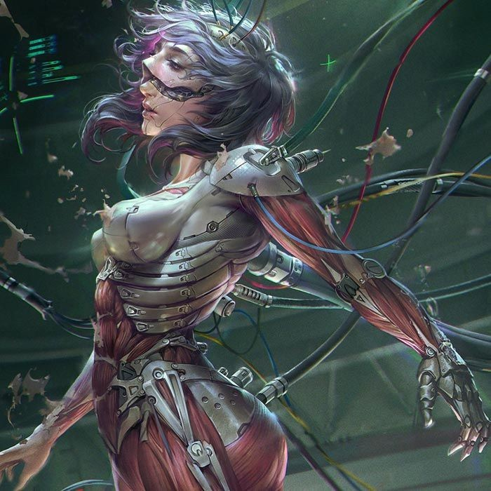
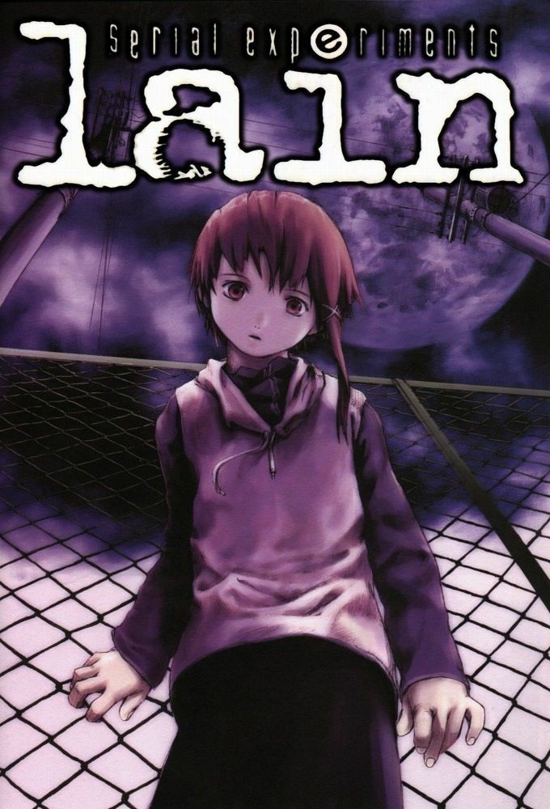
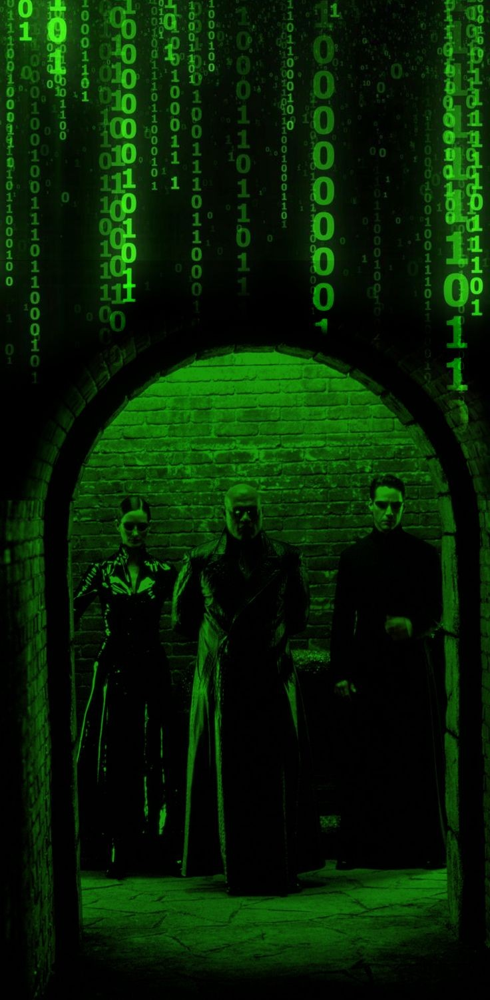
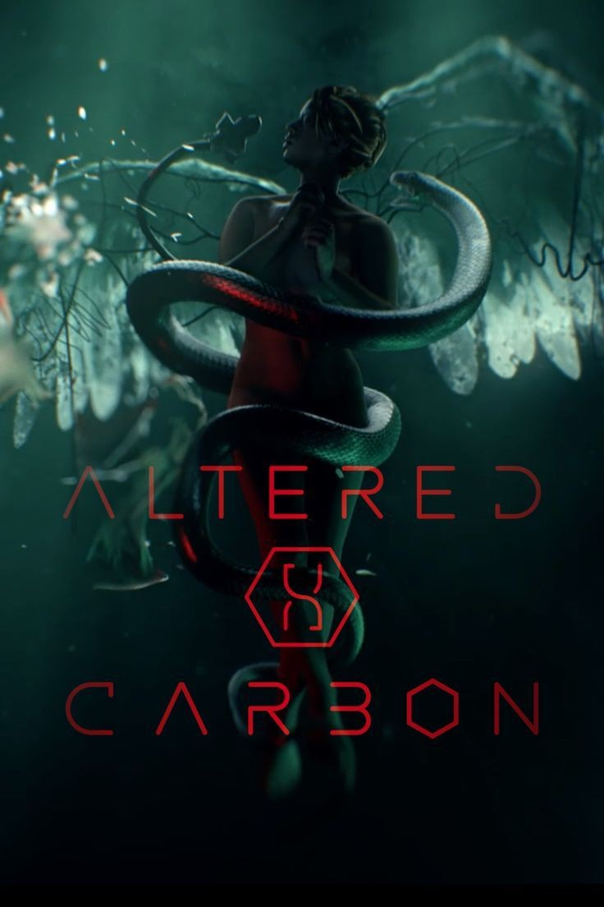
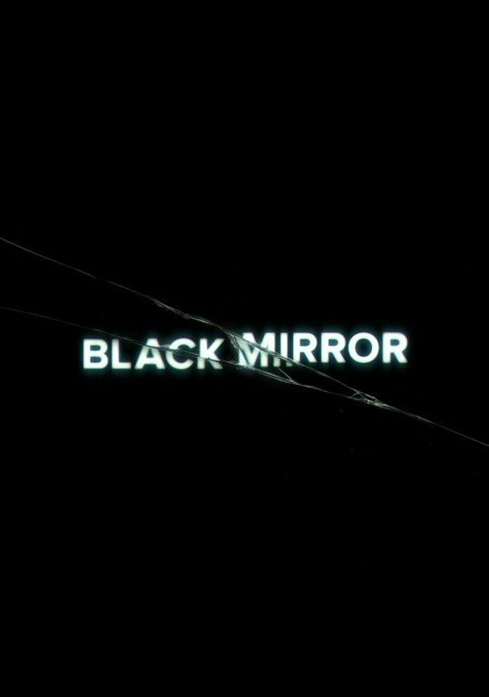
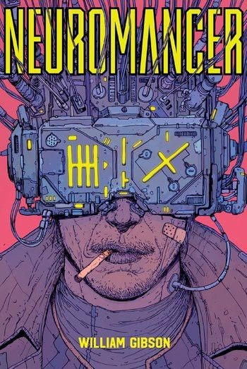
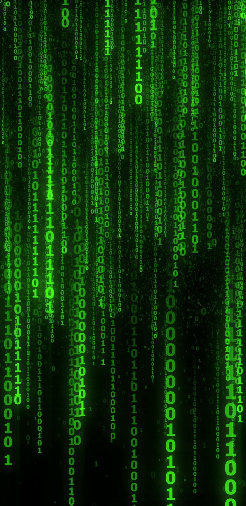
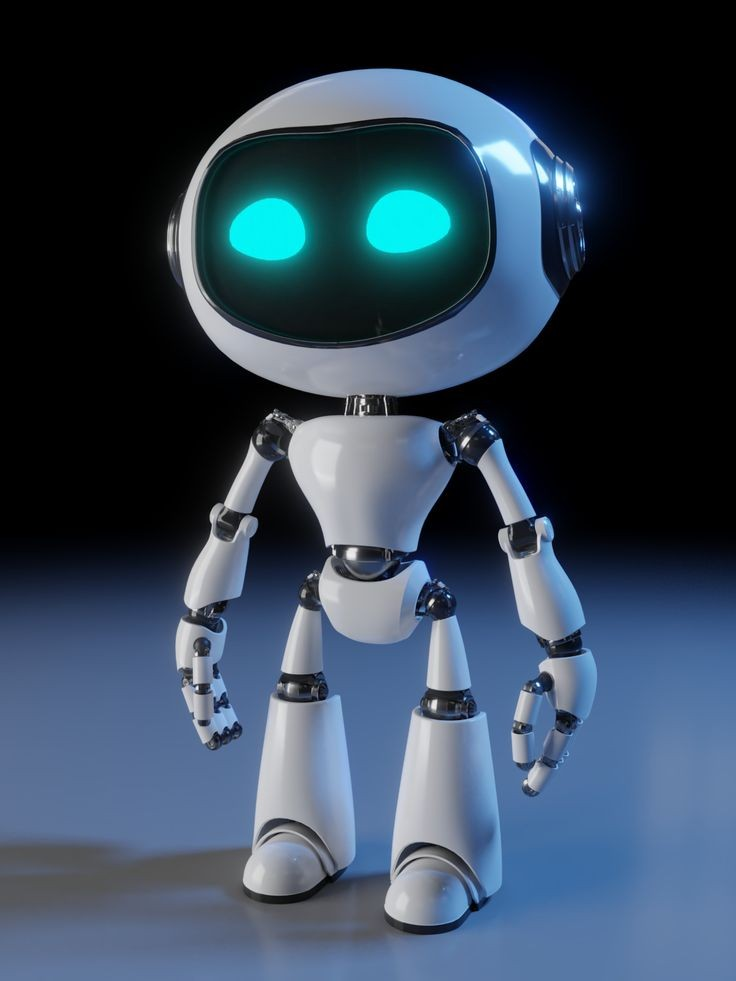
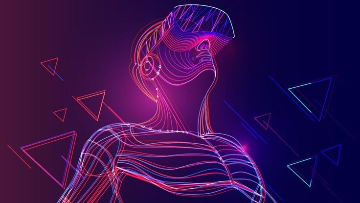

Conceito
Cyberpunk é um gênero de ficção científica cujo o tema é tratado por alta tecnologia em contraste por desigualdades sociais.
Animes
-
Ghost in the Shell
Em um futuro onde a linha entre os avanços da robótica e o conceito do que é ser humano fica cada vez mais tênue. Uma major, Motoko Kuzanagi com um corpo meio humano meio cibernético, resolve crimes e ao mesmo se indaga o que é de fato real e o que é ser humano.
-
Serial Experience Lain
Lain é uma estudante de uma escola só para meninas comum. Desinteressada por tecnologia até que recebe uma mensagem de uma garota que se suicidou e sua vida muda para sempre, assim como a linha do que real e virtual fica mais fina.
-
Ergo proxy
Ergo proxy,se passa em um futuro,onde humanos e androids,vivem em harmonia.Porém um android,atinge o estado de consciência humana,conhecida como ergo
-
Psycho Pass

Na década 2100, a humanidade é regulada por um sistema de código de cores,cujo o objetivo é regular o estado emocional, sendo possível separar aqueles,aptos de conviver em sociedade daqueles que não conseguem, chamado sistema Sybil. Policiais em comjunto com detentos em reabilitação no sistema Sybil,resolvem crimes,enquanto há certas pessoas que questionam esse sistema.
Filmes
-
Matrix
Thomas A Anderson, trabalha de dia como um programador e de noite como um hacker conhecido como Neo. Ele tenta todas as noites descobrir o que é matrix, cujo é algo que invade seus sonhos toda a noite. Quando conhece Trinity e Morpheus suas perguntas são respondidas e ele descobre que é o escolhido para libertar os humanos da escravidão dos robôs
-
I am Mother

Em um futuro onde é possível gerar humanos por meio de gestação artificial, um robô, ao ver uma criança nascer por desse processo, cria como uma mãe, enquanto sobrevive na Terra em colapso.
Séries
-
Altered Carbon
No futuro onde pode fazer upload de sua mente por meio de um cartucho. Um criminoso tenta descobrir sua identidade.
-
Black Mirror
Cada episódio é uma crítica a diversas maneiras de como as ferramentas tecnológicas impacta negativamente nossas vidas em um futuro próximo.
Livros
-
Neuromamcer
A história se passa no Japão, através de um caubói(um hacker) que perdeu seu acesso a rede, através de interface cérebro-máquina.
-
História da simulação
Livro não técnico, aborda o fato de possivelmente vivendo uma simulação, gerada por um super computador.
Games
-
Cyberpunk 2077
Cyberpunk 2077,é um jogo, lançado no dia 10 de dezembro de 2020. Em que o jogador, cria seu personagem e anda por night city.
Filosofia
-
Inteligência Artificial
A inteligência artificial, é um campo multidisciplinar que envolve filosofia, psicologia, neurociência, matemática e é claro: tecnologia. Tendo início oficial(junto com a cibernética) em 1957 em Dartmouth nos EUA. E se preocupa em simular o mais proximo o possivel da inteligência humana(mesmo tendo conceitos diferentes) com o objetivo de resolver problemas específicos(IA fraca), embora há questões, cujo o foco é: será que um dia IA possa superar a inteligência humana(IA forte ou generalista)? Se sabe dos grandes avanços que IA nos proporcionou e ainda nos proporciona, desde recomendações personalizadas em plataformas de streaming até o auxilio em diagnósticos médicos. Mesmo não passando no teste de Turing(teste proposto pelo matemático britânico Alan Turing em que avalia se uma máquina é capaz de conversar como um humano), porém consegue vencer humanos em tarefas específicas (como em 1997 com a Deep Blue, 2011 com a Watson, 2017 com a Alpha Go).
-
Realidade Virtual
O ser humano, sempre se perguntou sobre a realidade ao nosso redor. Isso nos fez desenvolver filosofia(nesse caso, a famosa caverna de Platão) até a fazer grandes revoluções(como a revolução francesa em 1789).Nós temos sensores(células especializadas) na nossa pele, de temperatura, tato, pressão, vibração, dor. Que navegam até nosso cérebro, através de nervos sensoriais, podendo gerar uma ação motora via nervos motores. Temos olhos, ouvidos, nariz, língua que proporcionam sensações ópticas, sonoras, olfativas, gustativas que navegam, também até o cérebro por nervos sensoriais específicos(no caso, nervos cranianos) e que também podem gerar ações motoras. A ação motora se dá por meio de percepção. Porém nosso cérebro é enganável, seja pelo ambiente externo ou interno(talvez por isso justificamos comportamentos que não nos orgulhamos). Onde a realidade virtual, mista ou almentada se encaixa? Tal como a televisão, cinema, redes sociais e diversas, tecnologia via imagem, muda o discernimento acerca da realidade, a realidade criada por nós e a realidade gerada por máquinas, pode ser embaralhada, principalmente com a crescente expansão do metaverso( em que aumenta a capacidade da realidade virtual que pode ser compartilhada entre pessoas, podendo até comprae terrenos virtuais ou ir a um show).